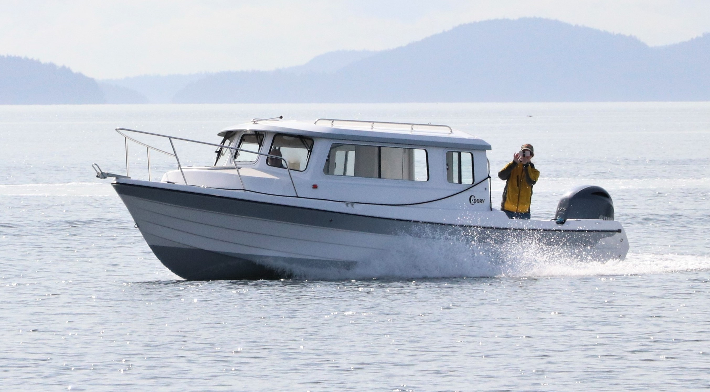

B-Atlas Boat Guide · CDRY-26-PA
C-Dory 26 Pro Angler Walkaround Fishing
1989–2005
The C-Dory 26 Pro Angler is a real, low-volume historical C-Dory fishing model documented in late-1980s/early-1990s factory literature and in later owner records. It uses a narrower cabin and walkaround-oriented fishing layout rather than the mainstream Cruiser arrangement; propulsion and year details vary among surviving examples.

- Length
- 26 ft
- Beam
- 8.5 ft
- Draft
- 1.5 ft
- Hull behaviour
- Planing
- Fuel
- Gasoline
- Propulsion
- Outboard
- Engine configuration
- Outboard or inboard configurations documented; verify individual hull
- Boat family
- Cruiser
- Construction
- Fiberglass
Best for
- Owners prioritizing simple, trailerable pilothouse cruising or fishing
- Couples or small crews operating on inland and coastal waters
- Buyers who value shallow draft and outboard service access
Trade-offs
- Light hulls can have a lively ride when conditions and speed are poorly matched
- Compact cabin and side-deck arrangements limit interior volume
- Outboard-powered layouts trade inboard protection for serviceability and shallow draft
Known concerns
- No model-specific concern has been promoted to B-Atlas’s evidence threshold. This does not mean the model has no age-, condition- or hull-specific risks.
Inspection focus
- Verify exact model, year and hull identity because C-Dory reused related hulls and names over a long production history
- Inspect cored hull/deck areas around penetrations and previous hardware installations
- Inspect transom or outboard bracket structure and engine mounting
- Verify fuel-system, steering and electrical updates on older examples
Continue researching
Related boat models
C-Dory 26 Venture Venture Cruiser
25.75 ft · Planing
C-Dory 25 Cruiser Cruiser
25.42 ft · Semi-Displacement
C-Dory 22 Cruiser Cruiser
22 ft · Planing
C-Dory TomCat 255 Power Catamaran
25.42 ft · Catamaran
Beneteau Barracuda 8 Sport-Fishing Pilothouse
26.21 ft · Planing
Beneteau Antares 8 Cruising / Fishing
26.42 ft · Planing
About this record
B-Atlas preserves uncertainty: missing information remains unknown rather than being treated as a negative. Specifications and guidance describe the model record; individual boats can differ by year, equipment, refit and condition.